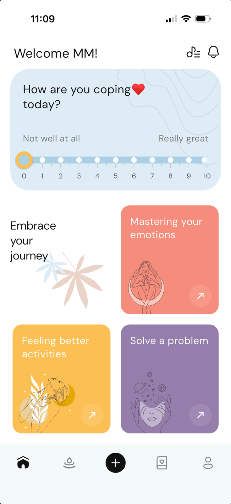
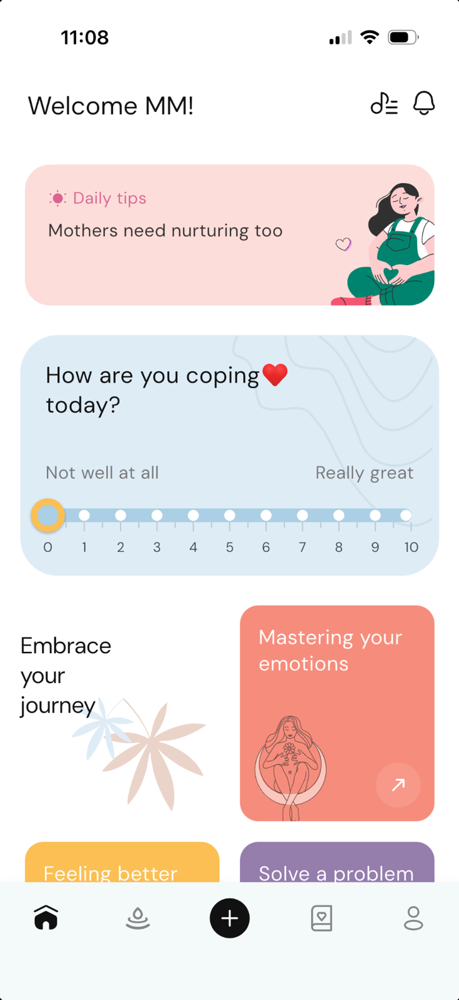

Perinatal wellbeing
MindMum
Supporting emotional wellbeing through pregnancy and early parenthood.
The challenge
Pregnancy and early parenthood can bring emotional challenges, with a need for accessible, practical and trusted support.
The solution
MindMum brings together self-guided wellbeing activities, mood reflection and practical coping resources in a mobile experience.
Thriver’s contribution
Thriver Consulting built the app in collaboration with perinatal mental health and research partners. Details of individual releases and development phases will be refined.
Collaborators
Parent-Infant Research Institute (PIRI) and perinatal mental health collaborators.
Evidence & research
Associated research & publications
- National Implementation of Perinatal Mental Health Treatment—The MumSpace Digital Stepped-Care Model ↗2025 · Related implementation study; includes MindMum reach and context
Publications may be authored by collaborating researchers and may examine the broader intervention rather than the app itself.
A 2025 implementation publication reports 14,173 cumulative downloads between 2017 and June 2024, across the project as a whole. This is a historical reach figure, not a claim about current usage.